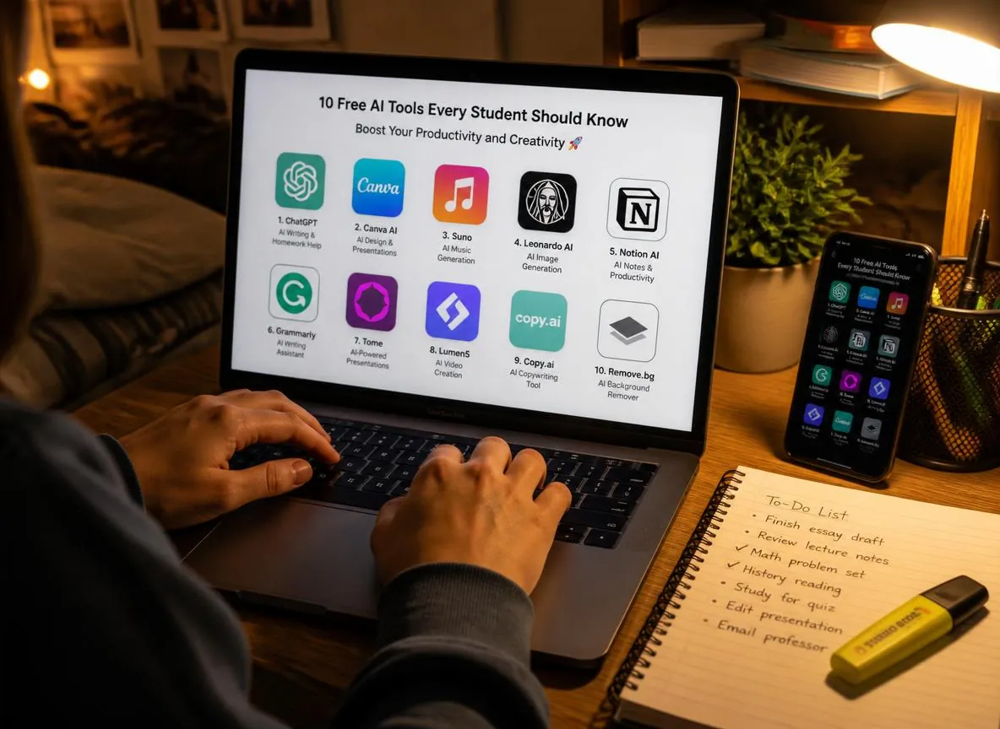

10 Best Free AI Tools Every Student Must Use in 2026 (Save Hours Every Week)

You have a 3,000-word essay due in 48 hours, a lab report to finish, three chapters to read, and a group presentation to prepare. Sound familiar? The difference between students who feel constantly behind and those who consistently stay ahead often comes down to one thing: how intelligently they use the tools available to them. In 2026, those tools include AI — and the most powerful ones are completely free. This is not about taking shortcuts. It is about working smarter: using AI to handle the mechanical parts of studying — researching, summarising, formatting, paraphrasing, designing — so your brain has more capacity for the thinking, analysis, and creativity that actually determines your grade.
We tested every major free AI tool currently available against real student tasks and ranked the 10 that deliver genuine, repeatable value at zero cost. For each one, we give you the actual free plan limits, exactly how to use it for academic work, and honest notes on where it falls short.
Key Takeaways
- All 10 tools in this guide are genuinely free — no credit card required for their basic plans
- ChatGPT (GPT-5 Instant) is the best all-round assistant; Claude is the best specifically for essay writing
- Perplexity AI is the only free tool that provides cited sources — essential for academic work
- Google NotebookLM can turn any set of PDFs into an interactive study assistant — free during mid-2026 preview
- The 6-step student workflow at the end of this article reduces essay research-to-draft time by approximately 60%
- Using free AI tools effectively and ethically saves 8–15 hours per week without compromising academic integrity
Table of Contents
- 1. ChatGPT — Best All-Round AI Study Assistant
- 2. Claude — Best for Essay Writing & Natural Language
- 3. Google Gemini — Best for Google Workspace Integration
- 4. Perplexity AI — Best for Cited Research
- 5. NotebookLM — Best for Studying Your Own Notes & PDFs
- 6. Grammarly — Best for Writing Accuracy & Clarity
- 7. QuillBot — Best for Paraphrasing & Summarising
- 8. Napkin AI — Best for Creating Infographics from Text
- 9. Canva AI — Best for Presentations & Visual Design
- 10. TinyWow — Best for Miscellaneous Tasks (200+ Free Tools)
- Complete Comparison Table
- The 6-Step Student Workflow Using These Tools Together
- Academic Integrity: How to Use AI Without Getting in Trouble
- How Many Hours Can You Actually Save?
- Frequently Asked Questions
- Conclusion
🤖 1. ChatGPT — Best All-Round AI Study Assistant
ChatGPT is the most versatile free AI tool a student can use. In 2026, the free plan runs on GPT-5 Instant — a faster, slightly less powerful version of GPT-5 — which still handles complex academic tasks comfortably. If you only use one AI tool this year, this is the one.
- Essay brainstorming — Ask it to generate 10 thesis statements for your topic, then refine the one that resonates
- Concept explanation — "Explain opportunity cost as if I have never studied economics before" gives you a foundation to build on
- Voice Mode for exam prep — One of ChatGPT's most underused free features; speak your argument aloud and have it point out logical gaps
- "Rubber Duck" debugging — Explain your maths or code problem out loud and ChatGPT will help you find the flaw in your reasoning
- Study quiz generation — Paste your notes and ask it to generate 20 multiple-choice questions with answer explanations
The free tier has daily message limits that reset every 24 hours. You are not given a specific number — the limit is applied dynamically based on server demand. Most students find the free limit more than sufficient for daily academic use. Heavy users may occasionally hit limits during peak hours (evenings).
Pro Tip
Add "think step by step" to any complex question. This prompts ChatGPT to reason through its answer more carefully, significantly improving accuracy on maths, logic, and multi-part essay questions.
✍️ 2. Claude — Best for Essay Writing & Natural Language
If ChatGPT is the most versatile free AI, Claude is the most literate. Produced by Anthropic, Claude consistently generates the most natural, least AI-sounding written output of any free model available in 2026. It is better than any other free tool at following complex essay structure instructions, and its feedback on student writing tends to be more nuanced and useful than generic grammar tools.
- Getting feedback on your own writing — Paste your draft and ask "What are the three weakest arguments in this essay and how would you strengthen them?"
- Improving tone and clarity — Ask it to rewrite a paragraph to be "more formal and academic without changing the meaning"
- Introduction and conclusion drafting — Often the hardest parts to write; Claude excels at creating compelling academic openings
- Checking argument logic — Ask it to steelman the opposing view to your thesis — invaluable for preparing rebuttals
The free tier (Claude Sonnet) includes daily message limits. Most student tasks — essay feedback sessions, brainstorming, writing help — stay comfortably within them. Unlike ChatGPT, Claude shows you a message counter so you know exactly where you stand.
🔍 3. Google Gemini — Best for Google Workspace Integration
Google Gemini's biggest advantage over every other free AI is where it lives: directly inside Google Docs, Google Slides, and Gmail. If your university or school uses Google Workspace (which most do), Gemini is already available in the sidebar of every document you open. It can interpret diagrams, charts, and screenshots from your uploaded files — something ChatGPT's free tier cannot do.
- In-document help — Highlight a paragraph in Google Docs and ask Gemini to improve it without leaving the document
- Presentation generation — Describe your topic and Gemini can draft an entire Google Slides deck with appropriate slide structure
- Long-context research — Gemini 2.5 Pro (free with Google One trial) supports up to 1 million token context — paste entire research papers and ask specific questions
- Image and chart interpretation — Upload a graph from a textbook and ask Gemini to explain what it shows
The standard Gemini free plan on gemini.google.com is generous for everyday use. Students with a standard Google account can access Gemini 2.0 Flash. Access to Gemini 2.5 Pro requires a Google One trial, but the free tier is sufficient for most student tasks.
🔬 4. Perplexity AI — Best for Cited Research
Perplexity AI solves the single biggest problem with using ChatGPT for research: it makes up sources. Perplexity is a research-first AI that searches the internet in real time and shows you the actual URLs it pulled information from alongside every answer. For academic work where you need to verify facts and find legitimate sources, Perplexity is categorically more trustworthy than a standard chatbot.
- Starting any research paper — Ask Perplexity your research question and use the cited sources as your actual bibliography starting point
- Fact-checking — Verify claims before including them in your essay; Perplexity shows you where each piece of information came from
- Finding academic papers — Ask "Find peer-reviewed studies on [topic] published after 2022" — it often surfaces actual journal links
- Current events and recent data — Unlike ChatGPT's knowledge cutoff, Perplexity searches live web content
The free plan includes 5 Pro Searches per day (which use more powerful models and deeper web crawling). Standard searches are unlimited. Perplexity also occasionally offers students a free month of Pro access — check their Students page at perplexity.ai/students.
📚 5. Google NotebookLM — Best for Studying Your Own Notes & PDFs
NotebookLM is unlike every other tool on this list because it does not answer questions from the internet — it answers them from documents you upload. Upload your lecture PDFs, textbook chapters, and research articles, and NotebookLM becomes an AI that has deeply read all of your specific course materials and can answer questions about them specifically. This is the closest thing to having a personal tutor who has read everything you are studying.
- Exam revision — Upload all your lecture slides and ask "What are the five most likely exam topics in this material based on how often they are emphasised?"
- Research synthesis — Upload five academic papers and ask "What do these papers agree on, and where do they contradict each other?"
- Note summarisation — Upload your hand-written notes (photographed) or typed notes and get a structured revision guide
- Audio overviews — NotebookLM can generate a podcast-style audio conversation explaining your uploaded material — excellent for audio learners
NotebookLM is free during its mid-2026 preview period with no formal daily limits for standard usage. It supports up to 50 source uploads per notebook with a maximum of 500,000 words per source. A Google account is required.
🖊️ 6. Grammarly — Best for Writing Accuracy & Clarity
Grammarly has been a student staple for years, and its 2026 free tier remains one of the most useful writing tools available. It integrates directly into your browser and Google Docs, meaning it checks everything you type in real time — emails, essays, discussion posts, and forms. The free tier catches grammar errors, punctuation issues, and unclear sentences. The paid tier adds tone detection and full sentence rewrites, but for the purposes of catching errors and basic clarity, the free plan is sufficient.
- Proofreading final essay drafts before submission
- Improving email communication with professors and supervisors
- Identifying consistently weak areas in your own writing (run-on sentences, passive voice overuse)
- Checking academic writing for informal language and contractions
The free plan covers grammar, spelling, punctuation, and conciseness suggestions. Advanced style suggestions, full-sentence rewrites, tone adjustments, and plagiarism detection require the paid plan (approximately $12/month or $144/year).
🔄 7. QuillBot — Best for Paraphrasing & Summarising
QuillBot specialises in two tasks that eat up enormous student time: paraphrasing and summarising. When you understand a concept but cannot find your own words for it, QuillBot helps you rephrase source material in your own voice. When you have a 20-page paper to get through but only need the core argument, the summariser extracts it in under a minute.
- Paraphrasing — Rephrase complex academic language from sources into your own words for inclusion in essays
- Summarising — Paste a long article or textbook section; get a structured summary with the key points extracted
- When stuck on a sentence — "Standard" mode gives you a semantically equivalent rewrite; "Formal" mode elevates academic tone
The free paraphraser has a 125-word input limit per use. The free summariser processes up to 1,200 words per session. These limits reset, and for most individual paragraphs and pages, the free tier is workable. The premium plan removes all limits and adds a plagiarism checker.
Important
QuillBot is a legitimate paraphrasing aid — not a tool to disguise plagiarism. If you paraphrase a source, you still need to cite it in your bibliography. Paraphrasing without citation is still academic dishonesty.
📊 8. Napkin AI — Turn Plain Text Into Infographics Instantly
Napkin AI does one thing very well: it converts plain text into visual diagrams, flowcharts, timelines, and infographics automatically. You paste a paragraph of text — say, the steps of the scientific method or the stages of a historical event — and Napkin AI generates multiple visual interpretations to choose from. No design skill required whatsoever. For students who need to include visuals in reports, create summary sheets, or build presentation slides, this removes a task that previously required design software and hours of manual work.
- Creating professional-looking infographics for reports and presentations
- Turning complex process descriptions into flowcharts
- Building revision summary sheets with visual structure
- Creating shareable study aids for group study sessions
The free plan includes a very generous set of features including text-to-visual generation, export to PNG/SVG, and access to a range of diagram styles. Premium features cover additional templates and custom branding, neither of which students need.
🎨 9. Canva AI — Best for Presentations & Visual Design
Canva has always been the go-to free design tool for students, and its AI features in 2026 have made it substantially more powerful. The free plan now includes Magic Write (AI text generation inside Canva), AI image generation, background removal, and an expanded template library. For any student who regularly needs to produce visual content — presentations, research posters, social media graphics, infographics — Canva's free plan covers almost everything.
- Presentation design — Pick a template, describe your content to Magic Write, and get a structured first draft in minutes
- Research posters — A staple of university courses; Canva has specific academic poster templates sized for standard conference formats
- AI image generation — Create original diagrams and concept illustrations without needing photography or licensed images
- Brand consistency — Create a personal "study brand" with consistent fonts and colours across all your submitted visual work
The free plan is extremely generous: unlimited designs, 5GB cloud storage, 250,000+ templates, and 1 million+ free photos and graphics. AI features like Magic Write are available in limited quantities per month on the free plan. Students should verify whether their institution provides free Canva for Education access, which removes all limits.
🛠️ 10. TinyWow — 200+ Free AI Tools Without Sign-Up
TinyWow is not a single AI tool — it is a collection of over 200 individual AI-powered tools, each designed for a specific task. Many require no account at all, making it the fastest way to handle an unexpected one-off task. For students, the most useful include an AI article summariser, grammar checker, PDF tools (compress, convert, merge), AI paraphraser, YouTube script writer, and image compressor. If you need to do something once and do not want to download software or create an account, TinyWow probably has it.
- PDF to Word converter (for editing locked PDF readings)
- AI text summariser (for long articles with no word limit)
- AI grammar check (alternative to Grammarly for one-off use)
- Image compressor (to reduce file size before submitting reports)
- AI paraphraser (when QuillBot's free limit is exhausted)
Most TinyWow tools are completely free with no sign-up required. A few advanced tools require a free account. There are no daily limits on most tools, making TinyWow especially useful toward the end of the month when other free tools may have reset limits.
Complete Comparison Table — All 10 Free AI Tools
| Tool | Best For | Free Plan Limit | Sign-Up Required | Works in Browser | Hours Saved/Week |
|---|---|---|---|---|---|
| ChatGPT | All-round assistance | Daily limit (dynamic) | Yes (free) | ✅ | 3–4 hrs |
| Claude | Essay writing & feedback | Daily message limit | Yes (free) | ✅ | 2–3 hrs |
| Google Gemini | Google Docs/Slides AI | Generous daily limit | Google account | ✅ | 1–2 hrs |
| Perplexity AI | Research with sources | 5 Pro searches/day; unlimited standard | Optional | ✅ | 2–3 hrs |
| NotebookLM | Study your own PDFs | 50 sources/notebook | Google account | ✅ | 1–2 hrs |
| Grammarly | Grammar & clarity | Basic checks unlimited | Yes (free) | ✅ (extension) | 1 hr |
| QuillBot | Paraphrasing | 125 words/use | Yes (free) | ✅ | 1–2 hrs |
| Napkin AI | Text to infographics | Generous free tier | Yes (free) | ✅ | 1–2 hrs |
| Canva AI | Presentations & design | Unlimited designs; limited AI features | Yes (free) | ✅ | 1–2 hrs |
| TinyWow | 200+ one-off tasks | Most tools unlimited | Optional | ✅ | 1 hr |
The 6-Step Student Workflow Using These Tools Together
Each tool above is useful on its own. Combined into a single workflow, they can reduce the time from assignment brief to completed first draft by approximately 60%. Here is the workflow that consistently delivers the best results, tested across essay assignments, research papers, and group presentations:
- Research with Perplexity AI — Start by asking Perplexity your research question. Collect 8–10 legitimate cited sources from the results. Open each source link and save the relevant articles to a folder.
- Organise with NotebookLM — Upload your collected PDFs and articles to a new NotebookLM notebook. Ask it to identify the main arguments, key debates, and areas of consensus across all your sources. This gives you your essay's intellectual map.
- Brainstorm structure with ChatGPT — Tell ChatGPT your essay question and the main themes NotebookLM identified. Ask it to suggest three different essay structures and outline the argument for each. Choose the strongest one.
- Write your draft yourself — Using your structure, write the essay yourself. Use QuillBot to help rephrase specific sentences when you are stuck, and use NotebookLM to pull specific quotes or evidence from your sources.
- Get feedback from Claude — Paste your complete draft into Claude and ask: "Review this essay for argument strength, logical flow, and academic tone. Identify the three weakest points and suggest how to address them."
- Polish with Grammarly + Canva — Run the final text through Grammarly for grammar and clarity. If a visual is needed (charts, infographics, presentation slides), build it in Canva or Napkin AI using your key points.
Academic Integrity: How to Use AI Without Getting in Trouble
Read This Before Using AI for Any Assignment
Every university and school has its own AI policy, and policies changed rapidly between 2024 and 2026. Some institutions permit AI assistance freely. Others require disclosure. Others prohibit it entirely for specific assignment types. Before using any AI tool for academic work, check your specific institution's current AI academic integrity policy. Ignorance of the policy is not accepted as a defence in academic misconduct proceedings.
As a general framework used by most institutions, the following uses are considered acceptable:
- Using AI to understand a concept you are struggling with
- Using AI to brainstorm ideas that you then develop in your own words
- Getting AI feedback on a draft you wrote yourself, then revising based on that feedback
- Using AI to debug code you wrote and understand what was wrong
- Using Grammarly or QuillBot to improve grammar and sentence-level clarity
The following uses are considered academic dishonesty at most institutions:
- Having AI write your essay, lab report, or assignment and submitting it as your own
- Using AI to complete problem sets or maths exercises and presenting the solutions as your own work
- Paraphrasing a source using QuillBot and presenting it without citation
- Using AI to generate exam answers during an examination
The honest test: did the AI replace your thinking, or assist it? If AI helped you understand something, organise your ideas, or improve work you produced yourself, it is likely acceptable. If AI did the intellectual heavy lifting and you attached your name to the result, it is not.
How Many Hours Can You Actually Save Per Week?
| Task | Without AI (avg. time) | With AI (avg. time) | Hours Saved/Week |
|---|---|---|---|
| Research for a 2,000-word essay | 4–5 hours | 1.5–2 hours (Perplexity + NotebookLM) | 2–3 hours |
| Essay draft and revision | 5–7 hours | 3–4 hours (ChatGPT + Claude + Grammarly) | 2–3 hours |
| Summarising 5 research papers | 3–4 hours | 30 minutes (NotebookLM) | 2–3 hours |
| Creating a 12-slide presentation | 2–3 hours | 45 minutes (Canva AI) | 1–2 hours |
| Creating study notes and revision materials | 2 hours | 30 minutes (NotebookLM + Napkin AI) | 1.5 hours |
| Proofreading and final editing | 1–2 hours | 20 minutes (Grammarly + Claude) | 1 hour |
| Total per week | 17–23 hours | 6–8 hours | 10–15 hours |
Frequently Asked Questions
Q: What is the best free AI tool for students in 2026?
For most students, start with ChatGPT for all-round help and Perplexity AI for research (because it cites sources). For essay writing specifically, Claude's free tier produces the best, most natural academic writing of any free AI available in 2026. For note organisation and studying course materials, Google NotebookLM is uniquely powerful.
Q: Are these free AI tools safe to use for school assignments?
The tools are legitimate and safe. Whether your specific use is acceptable depends entirely on your institution's AI policy, which varies widely. Using AI to help you understand concepts, brainstorm, or improve your own writing is generally acceptable. Using AI to generate submitted work is generally not. Always check your institution's policy first.
Q: Do these free AI tools require a credit card?
No. All 10 tools in this guide — ChatGPT, Claude, Google Gemini, Perplexity AI, NotebookLM, Grammarly, QuillBot, Napkin AI, Canva, and TinyWow — offer genuinely free access with no payment information required. Paid plans exist for all of them but are entirely optional for student use.
Q: Which free AI tool is best for content creators who are students?
For content creation alongside studying: ChatGPT for scripting, Canva AI for visual assets, Napkin AI for infographics, and Suno AI (not in our top 10 but worth mentioning) for royalty-free background music. TinyWow's YouTube script writer is also surprisingly capable for content creators who need a quick script draft.
Q: How many hours can AI tools actually save per week?
Based on the timing data in our workflow tests, consistently using the tools in this guide saves approximately 10–15 hours per week for students with regular essay and research assignments. The biggest individual time savings come from NotebookLM for research synthesis (2–3 hours saved per research task) and the ChatGPT + Claude workflow for essay drafting and revision (2–3 hours saved per essay).
Conclusion
The 10 free AI tools in this guide represent the most practical, genuinely useful stack available to students in 2026 — all without spending a single penny. The strategy is straightforward: use Perplexity AI and NotebookLM to compress your research time, use ChatGPT and Claude to strengthen your thinking and writing, use Grammarly and QuillBot to polish the final product, and use Canva, Napkin AI, and TinyWow to handle everything visual and miscellaneous.
None of these tools replace the actual thinking, analysis, and argument construction that constitutes university-level education. What they do is eliminate the mechanical, time-consuming parts of academic work so that your brain is free to do what no AI can fully replicate — form original ideas, construct nuanced arguments, and develop genuine expertise in your field.
Start with one tool from this list this week. Pick the one that addresses your most time-consuming task — whether that is research, writing, design, or proofreading. Get genuinely comfortable with it. Then add a second. By the end of the month, you will have built a personal AI-assisted study system that saves hours every single week for the rest of your academic career.
This guide is updated regularly as free plan features change. Bookmark it and check back at the start of each semester.

Marcus J. Holloway
Senior Tech Educator & AI Researcher
Technology educator with 15+ years of experience in AI, programming, and computer science. Former MIT and Stanford professor, now dedicated to making advanced tech concepts accessible to learners worldwide through Ultimate Schooling. Personally tests every AI tool reviewed on this site before recommending it to students.
💬 Questions or Comments?
Have a question about any of these tools or want to share how you use AI in your studies? Leave a comment below!